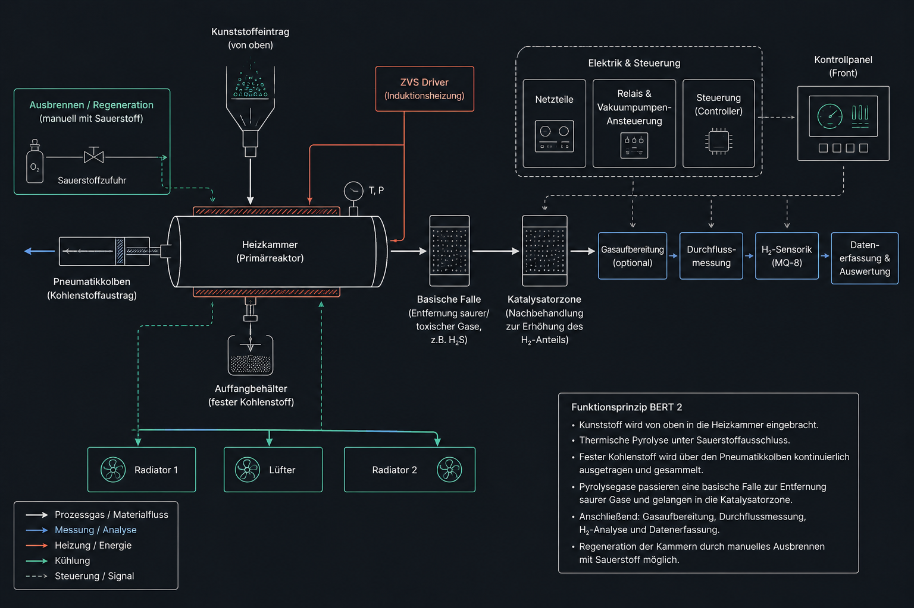

Der bisherige Batch-Reaktor eignet sich gut für Grundlagenversuche, muss aber bei jedem Durchlauf vollständig aufgeheizt und wieder abgekühlt werden. BERT 2 soll diese Grenze überwinden, indem die heiße Zone möglichst dauerhaft betrieben wird und nur das Kunststoffmaterial kontinuierlich nachgeführt wird.
- gleichmäßigere Temperaturführung
- bessere Vergleichbarkeit der Versuche
- kontrollierbarer Gasstrom im Vergleich zum Batchbetrieb
- direktere Kopplung mit Katalysatorzone und Messstrecke
- Perspektive für Mikrowellenheizung oder Mini-Reaktormodule
Kunststoff wird über eine Eintragszone in den Reaktor geführt, dort thermisch zersetzt und anschließend als Pyrolysegas in eine nachgeschaltete Katalysatorzone geleitet. Der feste Rückstand wird getrennt abgeführt oder gesammelt.
Langfristig soll geprüft werden, ob ein kompakter Durchlaufreaktor mit gezielter Mikrowellenheizung effizienter arbeiten kann als ein klassischer Batch-Aufbau.
Kunststoffgranulat oder zerkleinerte Probe wird kontrolliert eingebracht.
Thermische Zersetzung in einer konstant heißen Reaktionszone.
Nachgeschaltete Umsetzung schwerer Kohlenwasserstoffe zur Erhöhung des H₂-Anteils.
Gasstrom, Temperatur und H₂-Signal werden kontinuierlich erfasst.

Geplante Versuchsreihen
BERT 2 soll zunächst als Entwicklungsplattform bewertet werden. Die ersten Reihen prüfen Materialeintrag, Temperaturstabilität, Gasfluss und Katalysatorwirkung getrennt.
| Versuchsreihe | Ziel | Variable | Messgröße |
|---|---|---|---|
| B2-A: Leerbetrieb | Temperaturstabilität prüfen | Heizleistung, Argonfluss | Temperaturprofil, Wärmeverluste |
| B2-B: Materialeintrag | kontrollierte Kunststoffzufuhr testen | Partikelgröße, Eintragsrate | Verstopfung, Rückstand, Gasbildung |
| B2-C: Katalysatorstrecke | H₂-Anteil beeinflussen | Katalysatorart, Temperatur | MQ-8-Signal, Gasbildung, Rückstände |
| B2-D: Mikrowellenkonzept | alternative Heiztechnik prüfen | Absorbermaterial, Katalysatorbett | lokale Temperatur, Energiebedarf |